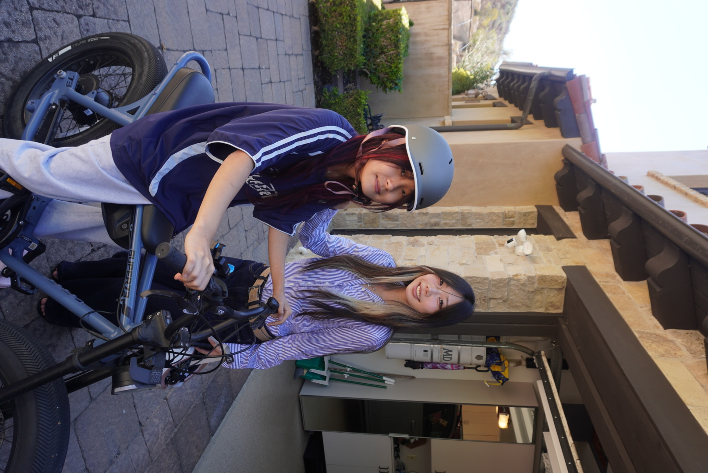
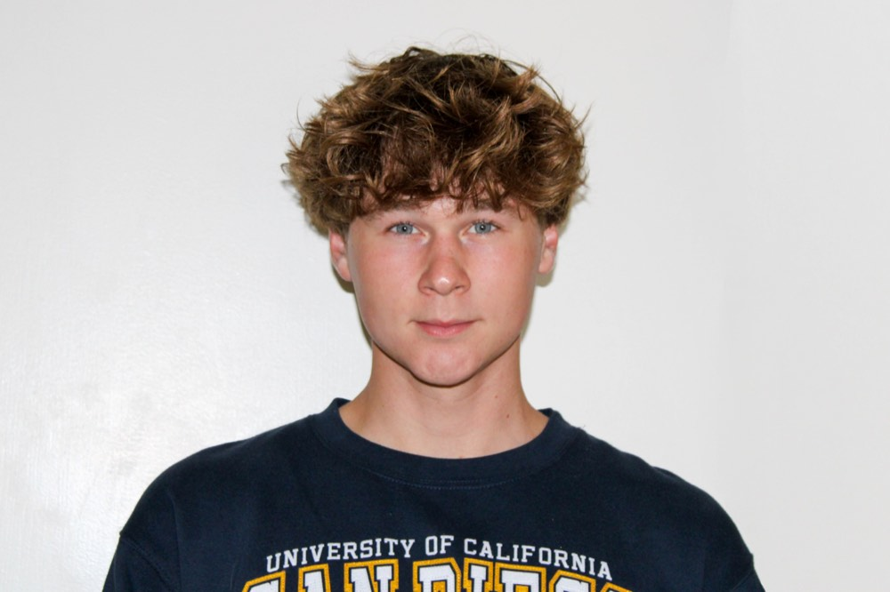
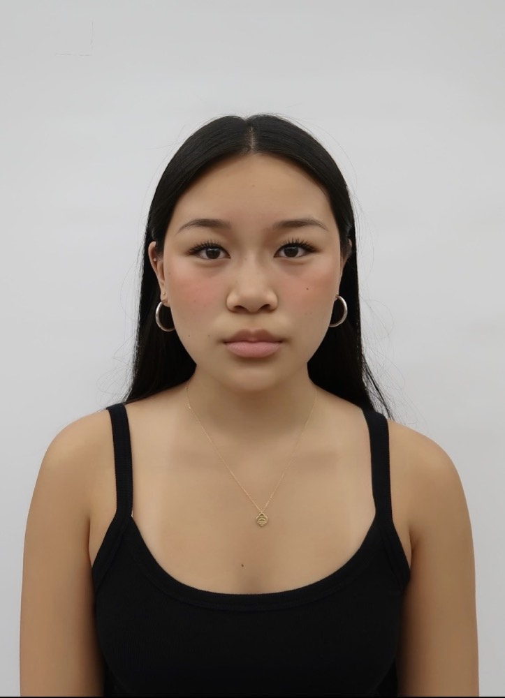
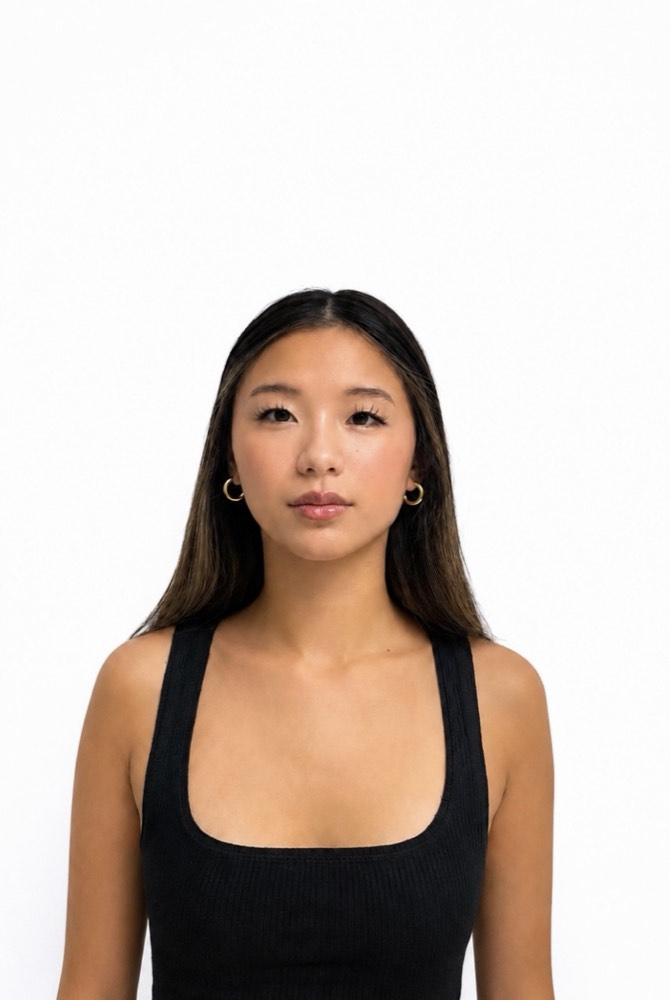
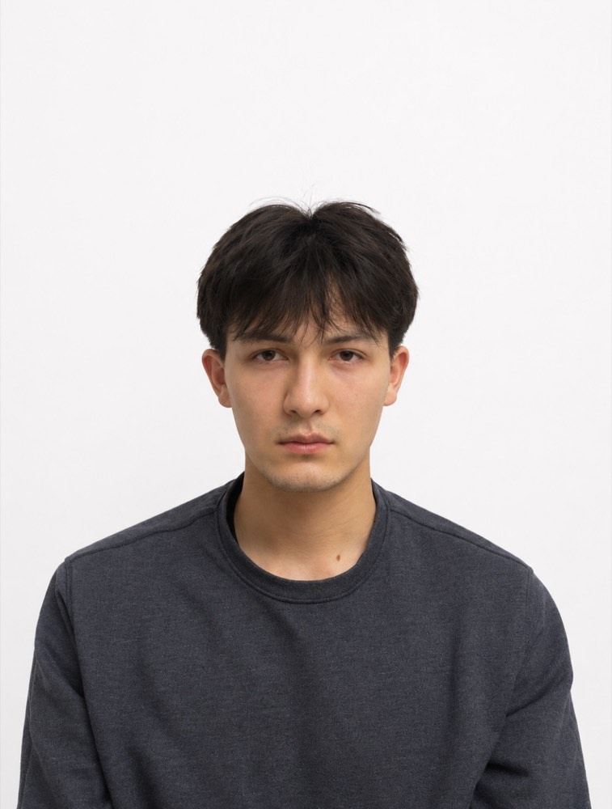
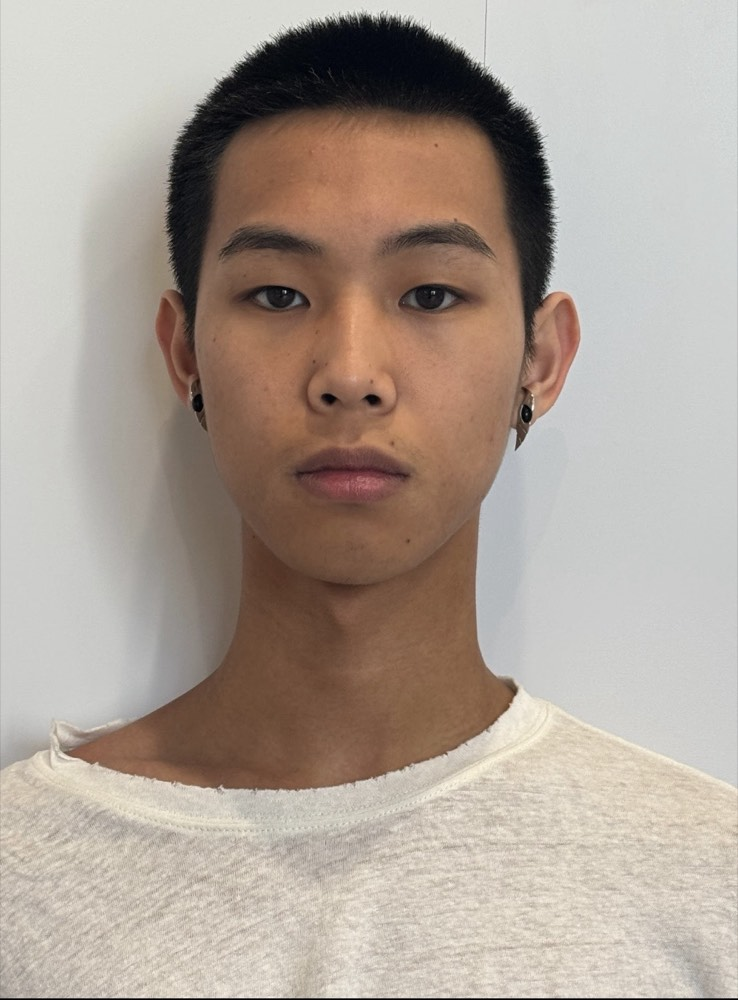

E-bike safety in Irvine · A project by Adriana
The Other
Half
Irvine wrote the rules for e-bikes. Nobody has taught the kids how to ride them.
Aerial imagery: USGS, The National Map · public domain
At a glance
I'm Adriana, and I live in Irvine. This page collects the research behind a proposal I'm bringing to the City Council — the whole argument in three cards, and the evidence for all of it below.
A third of bike crashes
More than one in three of Irvine's bicycle collisions involves a 13- to 16-year-old riding an e-bike.1
Ordinance 26‑05
In January 2026 the Council voted 6–1 to set speed limits on sidewalks and trails and hold parents accountable.12
Nobody teaches it
Enforcement acts after a crash. I'm asking for one school safety pilot and a public crash-reporting map — the proposal.
The campaign poster
Irvine Safe Ride

Every kid on
an e-bike deserves
to get home safe.
Printed at 1200 × 1800. The full-size original is Irvine safe ride official poster!.html.
The problem
E-bikes arrived faster than anyone taught kids to ride them.
More than
1 in 3
of Irvine's bicycle collisions involve a 13- to 16-year-old riding an e-bike.
- 13–16 on an e-bike
- 13–16 on another bike
- All other riders
The problem isn't that kids ride e-bikes. It's that a fourteen-year-old can be handed a machine that does twenty miles an hour with no license, no training, and often no helmet.
In a few short years e-bikes went from novelty to the default way a lot of Irvine students get to school. That's genuinely good for the city: fewer car trips, shorter pickup lines, and real independence for kids who are still years away from a driver's license. I don't want to take that away.
But the speed came without the schooling. A teenager on an e-bike is moving at traffic speed while being treated, legally and socially, like a kid on a bicycle. Most have never been taught right-of-way, how much longer it takes to stop at twenty miles an hour than at ten, or that a helmet only works if it actually fits.
What the classes mean
California sorts e-bikes into three classes, and most people buying one for their kid have never heard of them. These are the Irvine Police Department's own definitions.4
- Class 1Pedal-assist only, motor cuts out at 20 mph.
- Class 2Throttle — it moves without pedaling — capped at 20 mph.
- Class 3Pedal-assist up to 28 mph. Riders must be at least 16, and a helmet is required.4
Plenty of what's sold online outruns all three. A parent looking for a reliable way to get their kid to school can end up buying something closer to a moped, without ever being told.
Where it goes wrong
Across the research, the same failure modes come up again and again: riders traveling at unsafe speeds for the space they're in; helmet use that's inconsistent at best; almost no working knowledge of traffic law; trails and sidewalks built for walking pace absorbing bikes moving three times that fast; and parents buying high-powered bikes without knowing what they've bought.
It isn't a one-year blip either. Across the last three years, roughly 70% of Irvine's bicycle collisions involved a juvenile rider, and about 65% of those involved an e-bike.1
Underneath all of it is a practical problem: this is genuinely hard to enforce. You cannot station an officer at every school gate, and nobody wants a city that tries.
What the Council already did
Ordinance No. 26‑05
I'm not here to undo that work. Setting speed limits and holding parents accountable was the right call.
The Council took this seriously and acted. The ordinance put real speed limits on sidewalks and trails, and it made parents answerable for how their children ride — which matters, because parents are the ones buying the bikes.
It wasn't unanimous. Councilmember Mike Carroll cast the lone no vote, objecting to the sidewalk speed limits. That objection is worth taking seriously rather than waving away: rules aimed at minors can slide into over-policing kids, and a speed limit on a sidewalk is only as good as the judgment of whoever enforces it. It's part of why the proposal on this page asks for a classroom rather than a citation.
What it doesn't do
Ordinance 26-05 is enforcement. Nearly all of it takes effect after something has already gone wrong — after the speeding, after the crash, after the citation. That is one necessary half of a safety program. It is not the whole of one.
Where the gap is
A speed limit can't teach a fourteen‑year‑old how to read traffic.
Enforcement is the half of the problem you can write into municipal code. The other half is everything that happens before a citation: whether a kid was ever taught the traffic laws, whether the intersection outside their school has a protected crossing, and whether the city knows which corridors are actually dangerous.
None of that is funded. It isn't opposed either — it just hasn't been anybody's job. That's the gap this project is about, and it's a gap you close with a curriculum and a map, not with more rules.
The proposal · Irvine Safe Ride
One pilot.
One school.
This fall.
A partnership with IUSD to bring e-bike safety workshops into a single school — the traffic laws and riding skills that no one currently requires before a fourteen-year-old gets on a 500-watt bike.
A crowdsourced reporting map where residents flag crashes and near-misses, so the city finds out which corridors are dangerous before someone is hurt on one.
Two asks, both small enough to say yes to.
Why a workshop, and what's in it
One school, one term, taught in a slot that already exists rather than a new program built from nothing: right-of-way, stopping distance at speed, where you can and can't ride, and how to fit a helmet so it does something. Under AB 544, a minor cited for riding without a helmet can now satisfy the safety-course requirement with the CHP's online e-bike training program.5 That rule is sound — it just arrives after the citation. This is the same content, delivered before one.
Why a map
The city is making road-safety decisions without knowing where the near-misses happen, because near-misses don't generate police reports. A reporting map fixes that cheaply, and it doesn't need to be built from scratch — it can pilot on a platform the city already uses. It also gives residents somewhere to put what they see, which is worth something on its own.
Why so small
Because small things get funded. A council can approve one school and one map inside a single budget cycle; a five-part citywide program goes to committee and dies there. Run the pilot, measure it honestly, and let the results make the case for anything bigger.
If the pilot works
Four pillars
Infrastructure
- Protected bike lanes near schools
- Better intersection markings
- Lighting for visibility
- Dedicated crossings in high-traffic areas
Education
- Annual e-bike safety workshops
- Student riding certification
- Parent information sessions
Incentives
- Helmet discounts through local bike shops
- Foot traffic for small business, safety for riders
Data
- Annual public safety report
- Crash locations on a public map
- Regular evaluation of what's working
This is the long version — where the pilot leads if it works, not what I'm asking for in three minutes. I'm listing it because the Council should know the destination before approving the first step, and because the pilot is deliberately the cheapest piece of it.
Every option I weighed
Why this ask, and not the others
| Option | Feasibility | Verdict |
|---|---|---|
| Safety education campaign | High | Lead with it. Low cost, no political fight, pilots in one district. |
| Crowdsourced reporting | Medium | Pair with it. Cheap, and it generates the crash data the city lacks. |
| Helmet incentives | High | Supporting pillar, not the headline — it doesn't touch speed or road design. |
| Protected infrastructure | Medium–low, near term | Phase two. Study and pilot one corridor, not a citywide overhaul. |
| Stronger enforcement | Already done | 26‑05 covers it. Re-proposing it wastes the three minutes. |
| Ban high-powered e-bikes for minors | Low | State law defines e-bike classes and equipment, so a local ban would likely conflict with it. Ask for dealer disclosure at point of sale instead. |
I started with seven options and cut five. The test was simple: does it address a cause rather than a symptom, can a council actually approve it, and is it something Irvine isn't already doing?
A petition drive came closest to making the cut. It's cheap and it shows support, but councils have seen petitions before and can absorb one without doing anything. It works as a way to arrive with numbers behind a specific ask — not as the ask itself.
What I'm asking for
Lead on the other half: not just enforcing safety, but teaching it.
Irvine has already shown it's willing to lead on e-bike safety. The ordinance proved that. The next step costs a fraction of what's already been spent, and it reaches kids before the crash instead of after it.
Adriana · Public comment · Irvine City Council
Questions people ask
Fair objections
Isn't teaching kids to ride their parents' job?
Mostly, yes — and most parents are doing their best with a machine that didn't exist when they learned to ride. We don't leave driver's education to parents either, because the consequences are shared with everyone else on the road. An e-bike at twenty miles an hour is much closer to a vehicle than to the bike you grew up with.
Doesn't Ordinance 26-05 already handle this?
It handles the enforcement half, and it handles it well. But almost everything in it takes effect after a rule has already been broken. Nothing in the ordinance teaches a kid the rule in the first place, and nothing in it tells the city which intersections keep producing near-misses.
Are you trying to ban e-bikes, or take them away from kids?
No. E-bikes are good for Irvine — they cut car trips, ease school-run traffic, and give teenagers real independence. I want them ridden well, not ridden less. That's why I ruled out asking for a ban on high-powered bikes, even though it targets a genuine cause: state law already governs classification, and a local ban would likely conflict with it while being close to unenforceable.
How much would the pilot cost?
Less than almost anything else on the table, which is the point. One school, staff time in a slot that already exists, and a reporting tool that can run on a platform the city already pays for. I'm not going to invent a precise figure — establishing the real cost is part of what a pilot is for.
What can I do?
Come to a Council meeting and speak during public comment — three minutes, no appointment needed, and councils notice when residents keep showing up about the same thing. If you'd rather not speak, tell me which intersections worry you. That's exactly the information the reporting map is meant to collect, and I'm gathering it in the meantime.
The people behind it
Meet the team
Adriana Lee
Founder

Denes Garda
Webmaster

Kailen Lee
Outreach Officer

Jia Yoon
Research & Data

Harrison Nguyen
Writing & Research

Alex Lin
Treasurer
Caroline Lu
External Affairs
Sophia Nagel
Marketing
Photos live in photos/team/ — swap a file to
swap a face, and nudge object-position on an image if a crop sits too
high or low.
About this project & where the numbers come from
About
Why I built this
My name is Adriana Lee. I'm a second-year student at Irvine Valley College and I live in Irvine.
This started on my own street. A child was hit by a car while out riding with no adult around. I have younger siblings who ride, and after that I started paying closer attention to how kids actually get around this city, and how much of it is left to chance.
Irvine Police Department data says the same thing. Riders aged 13 to 16 account for 53% of the city's bicycle collisions, and 69% of those collisions involve an e-bike.1
So I started Irvine Safe Ride, an independent community initiative. It runs on a one-page proposal with three parts: protected bike lanes along the busiest school routes, a required safety course for riders under 16 run with IUSD, and quarterly public reporting of e-bike collision data. I've also made outreach materials aimed at younger teenagers, since they're the group least likely to see anything the city currently publishes.
Irvine Safe Ride is independent. It isn't affiliated with the City of Irvine or IUSD. Get in touch: adrianairvinesaferide@gmail.com.
Sources
- 1 — Collision figures, the 6–1 vote, the dissent. Lt. Shaheen Jahangard of the Irvine Police Department traffic bureau told the City Council that 13- to 16-year-olds are involved in 53% of the city's bicycle collisions and that 69% of those involve an e-bike; over three years, about 70% of bicycle collisions involved a juvenile rider and about 65% of those an e-bike. Reported in Voice of OC, “Irvine Cracks Down on Reckless E-bike Riding, Parents to be Held Accountable,” 2 February 2026.
- 2 — Ordinance No. 26‑05. Amends Division 7 of Title 4 of the Irvine Municipal Code, covering bicycles and electric bicycles. First reading 27 January 2026; returned to the Council 10 February 2026. City of Irvine staff report, Request for City Council Action.
- 3 — “A full-blown crisis.” Mayor Larry Agran at the Irvine City Council meeting of 12 November 2025: “We're in the midst of a full-blown crisis that is not soon to go away.” Police Chief Michael Kent also addressed the Council at that meeting. Reported in Voice of OC, “More Orange County Cities Grapple With E-bike Regulations, Youth Safety,” 3 December 2025.
- 4 — E-bike classes and helmet rules. Irvine Police Department, “E-bikes in Irvine: A User Guide for Parents and Riders”.
- 5 — The CHP safety course. AB 544, effective 1 January 2026, “allows the CHP-developed online electric bicycle safety and training program to fulfill the safety course requirement for minors who receive a helmet violation involving electric bicycles.” California Highway Patrol, “New Year, New Laws”.